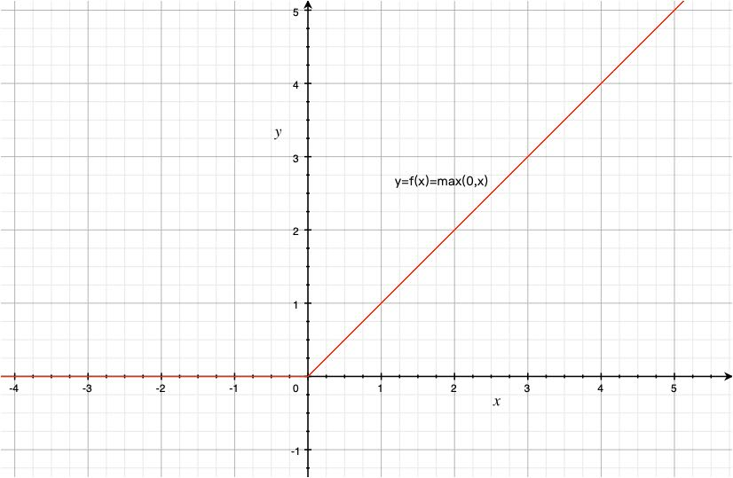
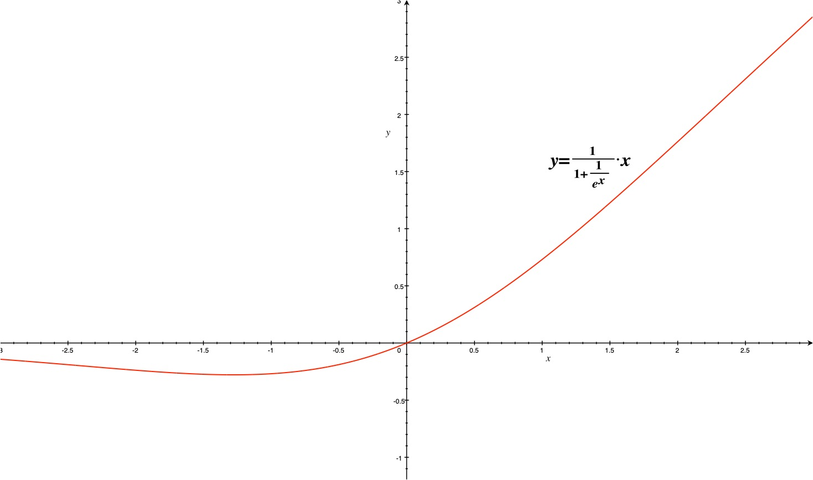
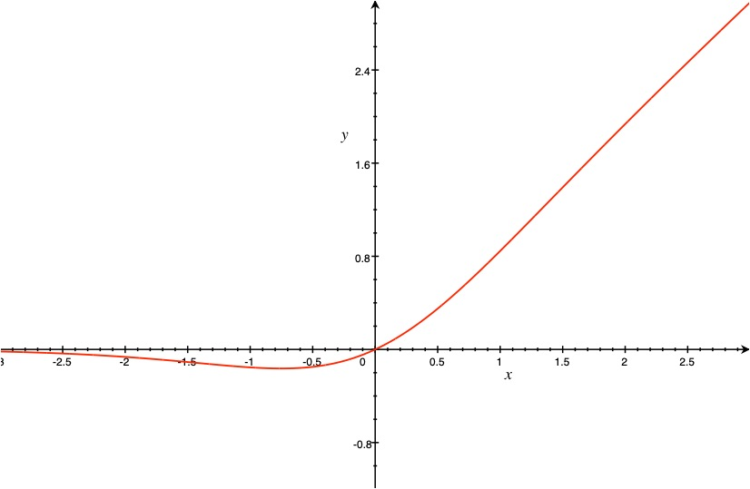
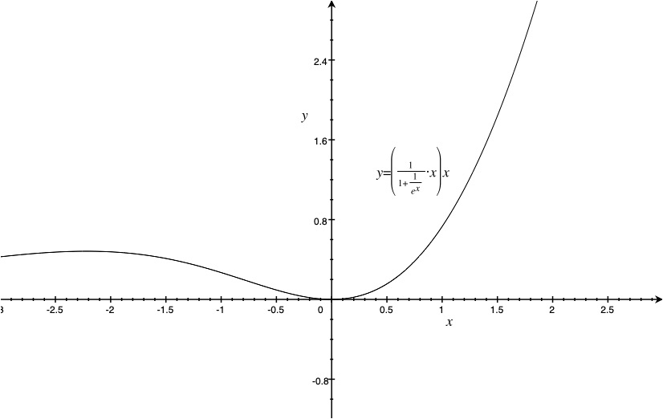

从ReLU到SwiGLU
在Transformer的结构中，基本都会使用到FFN(Feed Forward)层，在FFN层的激活函数主要使用了ReLU，GeLU，SwiGLU等。FFN层本质上是一个两层的全连接层，只是第一层会对输入进行升维，第二层对输入进行降维，升维和降维的过程相当于是学习更抽象的特征：
其中的f一般为非线形激活函数，比如ReLU。在大模型的网络结构中，一般都使用ReLU，GeLU，SwiGLU，GeGLU等，下面对这几个激活函数进行介绍。
ReLU
ReLU是目前深度学习中最常用的激活函数，ReLU是一个非线形的单边抑制激活函数，其激活函数如下所示：
其函数图像如下：

优点：ReLU的好处在于计算简单，没有饱和区（sigmoid函数反向传播时，很容易就会出现梯度消失 的情况（在sigmoid接近饱和区时，变换太缓慢，导数趋于0，这种情况会造成信息丢失），从而无法完成深层网络的训练。），具备稀疏性，可以输出真正的零（ReLU函数在负半区的导数为0，所以一旦神经元激活值进入负半区，那么梯度就会为0，而正值不变，这种操作被成为单侧抑制。），有助于深层网络训练。
GLU
GLU 全称为Gated Linear Unit，即门控线性单元函数，2016年由微软提出，其公式如下所示。借鉴了ReLU激活函数的思想（当输入向量x的值小于 0 时直接阻断，当时输入向量 𝑥 的值大于 0 值直接通过）。
其中，x为输入的矩阵，\(\sigma\)为sigmoid激活函数，\(g(x)\)为通过全连接层或卷积层输出的矩阵。当\(\sigma\)输出接近0时对输入抑制，当输出接近1时对输入进行通过，起到门控函数的效果，同时没有sigmoid函数在0或1饱和区域的缺点。
将g(x)替换为x的函数图像如下图所示：

Swish
Swish是Google在17年10月提出的一种新型激活函数，主要针对sigmoid在饱和问题和ReLU非连续性问题上提出，其函数形式如下：
其中，\(\sigma\)表示sigmoid函数。当\(\beta=1\)时，和GLU相似。
swish激活函数具有以下特点：
1️⃣和ReLU一样，没有上边界，不会出现梯度饱和的现象；2️⃣存在下边界，可以产生强正则化效果，具有稀疏性；3️⃣在大于0的区域为线性函数；4️⃣处处可导，容易训练。
GeLU
GeLU(Gaussian Error Linear Unit)是基于ReLU、Dropout进行优化，在2020年被提出，成为优秀的常用的激活函数之一。其形式为：
其中x为输入值，X是具有零均值和单位方差的高斯随机变量。\(P(X<=x)\)是X小于或等于给定值x的概率。\(I \times x \times \phi(x)+0 \times x \times (1-\phi(x))=x \times \phi(x)\)，在论文中对该式子进行了近似：
其中\(\sigma(x)\)代表sigmoid激活函数，其近似函数图像如下图所示：

优点，1️⃣具有更光滑的导数：GELU函数的导数是连续的，这使得在训练深度神经网络时可以更容易地传播梯度，避免了ReLU函数在 处的导数不连续的问题，从而减少了训练过程中出现的梯度消失问题2️⃣可以加速收敛：GELU函数在激活函数的非线性变换中引入了类似于sigmoid函数的变换，这使得GELU函数的输出可以落在一个更广的范围内，有助于加速模型的收敛速度。
SwiGLU
SwiGLU是2019年提出的新的激活函数，它结合了SWISH和GLU两种者的特点。SwiGLU主要是为了提升transformer中的FFN(feed-forward network)层的实现。FFN层的原始定义如下，其中使用了ReLU的激活：
SwiGLU是时Swish和GLU的结合体，其形式如下：
基于SwiGLU的FFN的变种如下：

GeGLU
GeGLU是GeLU和GLU综合的激活函数，结合了两者的特性。函数形式如下：